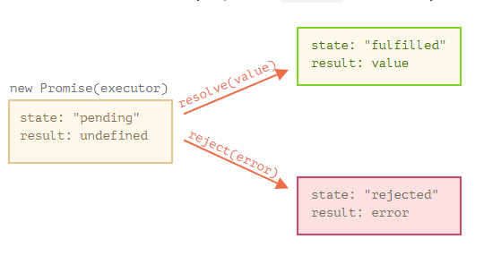

Синтаксис создания Promise:
let promise = new Promise(function(resolve, reject) {
// функция-исполнитель (executor)
});
Функция, переданная в конструкцию new Promise, называется исполнитель (executor). Когда Promise создаётся, она запускается автоматически. Она должна содержать «создающий» код, который когда-нибудь создаст результат.
Её аргументы resolve и reject – это колбэки, которые предоставляет сам JavaScript. Наш код – только внутри исполнителя. Когда наш код внутри исполнителя выполнится, сейчас или позже – не важно, то мы должны вызвать один из этих колбэков:
Итак, исполнитель запускается автоматически, он должен выполнить работу, а затем вызвать resolve или reject.
У объекта promise, возвращаемого конструктором new Promise, есть внутренние свойства:
Так что исполнитель по итогу переводит promise в одно из двух состояний:
Ниже пример конструктора Promise и простого исполнителя с кодом, дающим результат с задержкой (через setTimeout):
let promise = new Promise(function(resolve, reject) {
// эта функция выполнится автоматически, при вызове new Promise
// через 1 секунду сигнализировать, что задача выполнена с результатом "done"
setTimeout(() => resolve("done"), 1000);
});

А теперь пример, в котором исполнитель сообщит, что задача выполнена с ошибкой:
let promise = new Promise(function(resolve, reject) {
// спустя одну секунду будет сообщено, что задача выполнена с ошибкой
setTimeout(() => reject(new Error("Error!")), 1000);
});
Подведём промежуточные итоги: исполнитель выполняет задачу (что-то, что обычно требует времени), затем вызывает resolve или reject, чтобы изменить состояние соответствующего Promise.
Исполнитель должен вызвать что-то одно: resolve или reject. Состояние промиса может быть изменено только один раз.
Также заметим, что функция resolve/reject ожидает только один аргумент (или ни одного). Все дополнительные аргументы будут проигнорированы.
Вызывайте reject с объектом Error
Свойства state и result – это внутренние свойства объекта Promise и мы не имеем к ним прямого доступа. Для обработки результата следует использовать методы .then/.catch/.finally
.then
promise.then(
function(result) { /* обработает успешное выполнение */ },
function(error) { /* обработает ошибку */ }
);
Первый аргумент метода .then – функция, которая выполняется, когда промис переходит в состояние «выполнен успешно», и получает результат. Второй аргумент .then – функция, которая выполняется, когда промис переходит в состояние «выполнен с ошибкой», и получает ошибку.
Например, вот реакция на успешно выполненный промис:
let promise = new Promise(function(resolve, reject) {
setTimeout(() => resolve("done!"), 1000);
});
// resolve запустит первую функцию, переданную в .then
promise.then(
result => alert(result), // выведет "done!" через одну секунду
error => alert(error) // не будет запущена
);
А в случае ошибки в промисе – выполнится вторая:
let promise = new Promise(function(resolve, reject) {
setTimeout(() => reject(new Error("Whoops!")), 1000);
});
// reject запустит вторую функцию, переданную в .then
promise.then(
result => alert(result), // не будет запущена
error => alert(error) // выведет "Error: Whoops!" спустя одну секунду
);
Если мы заинтересованы только в результате успешного выполнения задачи, то в then можно передать только одну функцию:
let promise = new Promise(resolve => {
setTimeout(() => resolve("done!"), 1000);
});
promise.then(result => alert(result)); // выведет "done!" спустя одну секунду
.catch
Если мы хотели бы только обработать ошибку, то можно использовать null в качестве первого аргумента:
let promise = new Promise(resolve => {
setTimeout(() => reject(new Error("Error")), 1000);
});
promise.then(
null,
error => alert(error)
);
Или можно воспользоваться методом .catch(errorHandlingFunction), который сделает тоже самое:
let promise = new Promise((resolve, reject) => {
setTimeout(() => reject(new Error("Ошибка!")), 1000);
});
// .catch(f) это тоже самое, что promise.then(null, f)
promise.catch(alert); // выведет "Error: Ошибка!" спустя одну секунду
finally
finally хорошо подходит для очистки, например остановки индикатора загрузки, его ведь нужно остановить вне зависимости от результата.
new Promise((resolve, reject) => {
setTimeout(() => resolve("result"), 2000)
})
.finally(() => alert("Промис завершён"))
.then(result => alert(result)); // <-- .then обработает результат
new Promise((resolve, reject) => {
throw new Error("error");
})
.finally(() => alert("Промис завершён"))
.catch(err => alert(err)); // <-- .catch обработает объект ошибки